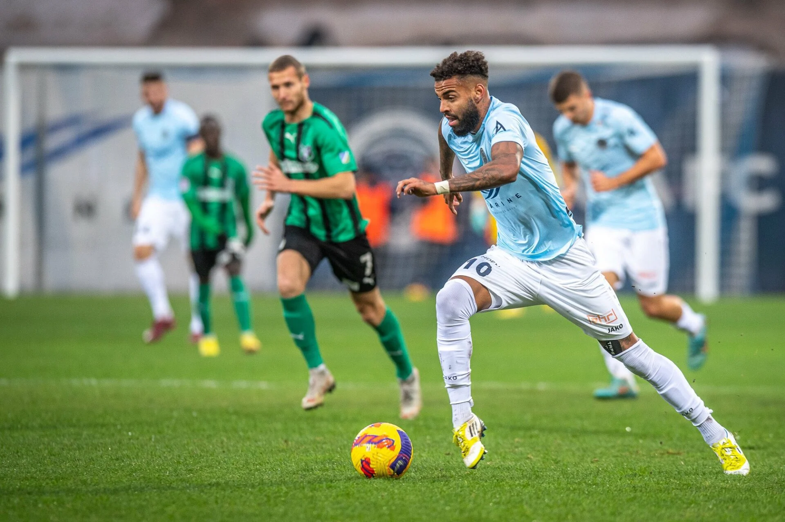
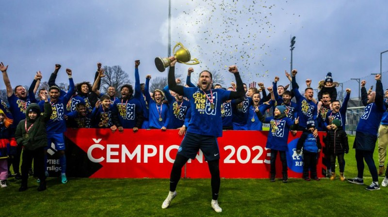

Futbols Latvijā ir sarežģīta strukturāla sistēma, sastāvot no profesionāliem futbola klubiem, to akadēmijām, un citiem mazāka līmeņa klubiem. Vairāk par futbolu Latvijā var uzzināt.
Futbolam latvijā ir seni aizsākumi. Futbols latvijā pirmo reizi tika spēlēts 1906. gadā un no tā brīža ir bijis neatņemama daļa Latvijas sporta pasaules. Vairāk par futbola vēsturi Latvijā šeit.
Kā jau iepriekš minēts Latvijā ir daudz profesionālu futbola klubu.
Galvenā daļa šo futbola klubu spēlē Latvijas augstākājā līgā- Virslīgā.
 Šie ir visi Virslīgas futbola klubi uz 2024 gada sezonu.
Bet šo futbola klubu saraksts ir mainīgs un neparadzams tapēc priekš precīzākas informācijas apmeklēt lff majaslapu.